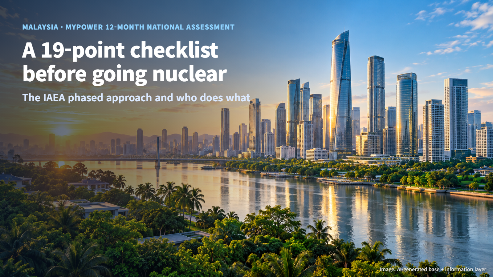
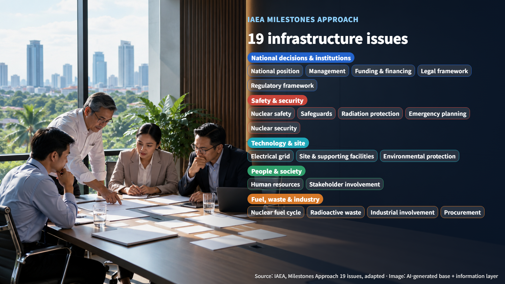
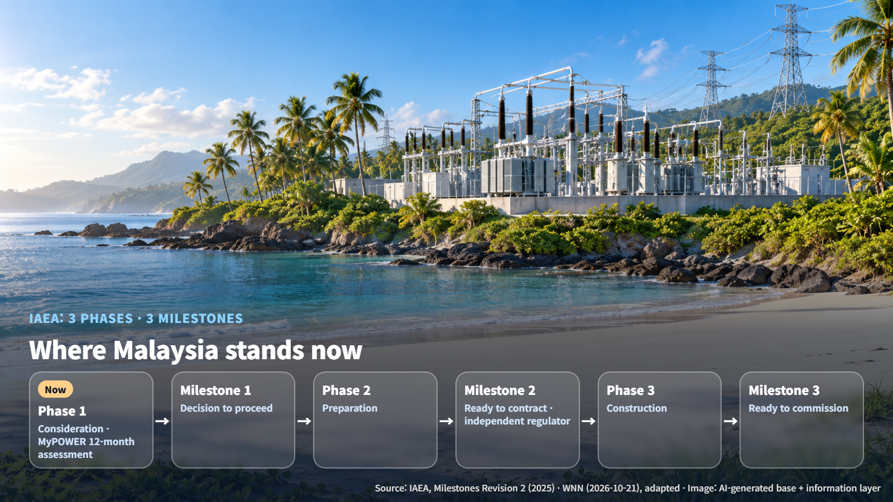

Malaysia · Nuclear Newcomer Readiness
A 19-Point Checklist Before Going Nuclear: Inside Malaysia's 12-Month MyPOWER Assessment
Before deciding on nuclear power, Malaysia is checking its readiness against the IAEA's 19 infrastructure issues in a 12-month national assessment.
News that a country wants to build nuclear power plants comes up often. What is less visible is the homework a country does before it makes that decision. Introducing nuclear power means preparing far more than a power station: it also involves laws, regulation, people, money and local communities.
World Nuclear News (WNN) reported that on 21 October 2026, at the World Nuclear Supply Chain event in Manila, officials from Malaysia and other ASEAN countries discussed how they are preparing for nuclear power. Following the Malaysian assessment presented there gives a concrete picture of what a country examines before it decides.

What Malaysia Is Doing Over 12 Months
Shamsul Amri of TNB Genco explained that Malaysia's MyPOWER is carrying out a national comprehensive assessment of 19 nuclear infrastructure issues over 12 months, starting in May 2026. The drivers behind the review are rising electricity demand and energy security.
MyPOWER is Malaysia's Nuclear Energy Programme Implementing Organization (NEPIO), placed under the Ministry of Energy Transition and Water Transformation (PETRA). A NEPIO coordinates the preparations for nuclear power across many institutions, and MyPOWER describes its role as coordinating the programme's foundations, regulatory readiness and stakeholder engagement.
This detailed assessment focuses on implementing the 22 recommendations that came out of a 2024 pre-feasibility study. The work runs along four tracks: policy, legal and regulatory; site, techno-economics and industrial development; stakeholder engagement and communication; and workforce and talent development. Picture two documents laid side by side on one desk: the international checklist of 19 issues, and Malaysia's own list of 22 recommendations, matched item by item.
The IAEA's Three Phases and 19 Issues
The 19 issues come from the International Atomic Energy Agency's (IAEA) Milestones Approach, a framework for countries introducing nuclear power for the first time. It consists of three phases: consideration, preparation and construction, and three milestones that close each phase: the decision to proceed, readiness to contract, and readiness to commission. If the phases are school years, the milestones are the exams a country takes before moving up to the next year.
All 19 issues are reviewed in every phase, and the maturity and work expected for each issue grow as the country moves up. Grouped by theme, they look like this:
- National decisions and institutions: national position, management, funding and financing, legal framework, regulatory framework
- Safety and security: nuclear safety, safeguards (the system that verifies nuclear material is used only for peaceful purposes), radiation protection, emergency planning, nuclear security
- Technology and site: electrical grid, site and supporting facilities, environmental protection
- People and society: human resource development, stakeholder involvement
- Fuel, waste and industry: nuclear fuel cycle, radioactive waste, industrial involvement, procurement
(Source: IAEA, Milestones Approach 19 issues, adapted)
The electrical grid issue, for example, asks about the conditions for connecting a plant to the power system. The 19 issues work like 19 pillars holding up the house that is a nuclear programme; when one is missing, the balance of the whole house is at risk.

Who Does What: MyPOWER, Atom Malaysia and TNB Genco
The Malaysian government began assessing the role of nuclear power in its energy mix in August 2025. Within that effort, three organizations each have their own place:
- MyPOWER: as the NEPIO, prepares policy and foundations and coordinates the institutions involved
- Atom Malaysia (Malaysia's atomic energy authority): according to its official corporate profile, controls and supervises nuclear activities and advises the government
- TNB Genco: the utility-side organization that hopes to take on the role of future developer and operator
TNB Genco has its roots in TNB. TNB set up a dedicated team in 2023, turned it into a project management organization in 2025, and moved the related activities to TNB Genco in early 2026.
At the second milestone, the IAEA asks for a regulatory body with genuine independence and the capability to exercise its authority, together with an operator able to manage the project and meet regulatory requirements. The operator needs to be a "knowledgeable customer": a buyer that understands what it is purchasing and can manage its suppliers. The blueprint drawn by the coordinating body then carries over into the regulator's review and inspection capability and the operator's ability to deliver the project.
Next Steps: Assessment Results and Policy Decisions
The presenter placed Malaysia, within the IAEA's phased approach, in the first phase, where a country considers whether to introduce nuclear power. The purpose of the first milestone is to understand the responsibilities, resources and risks that come with nuclear power, and to make a decision based on sufficient information.

The IAEA's evaluation guidance (NG-T-3.2 Rev.2) asks countries to record the evaluation process, the evidence reviewed, the further actions needed and the status of each condition. At the end of a phase, the NEPIO's report sets out development plans for the regulatory body and the operating organization, the resources and schedule required, and how the responsibilities for safety, security and safeguards are understood.
Malaysia's scores for each issue, whether milestones have been achieved, and any choice of reactor type or site have not been disclosed yet. The 12 months are the duration of the assessment work; a plant construction schedule would come later, in separate project documents. The points to watch from here are the publication of MyPOWER's assessment results and the policy decisions that follow, along with confirmation of TNB Genco's role and its plans for regulation, siting and financing.
Regional cooperation is moving forward alongside. The ASEAN Centre for Energy has put forward supply chains, workforce, financing, regulation, safety, safeguards and public acceptance as topics for cooperation. Sharing experience with neighbours helps each country build its laws and institutions and weigh its choice of suppliers.
The starting point for nuclear power is a checklist: 19 questions, each answered one by one with evidence. The next time you hear that a country is moving toward nuclear power, it is worth asking which phase of that checklist it is filling in right now.